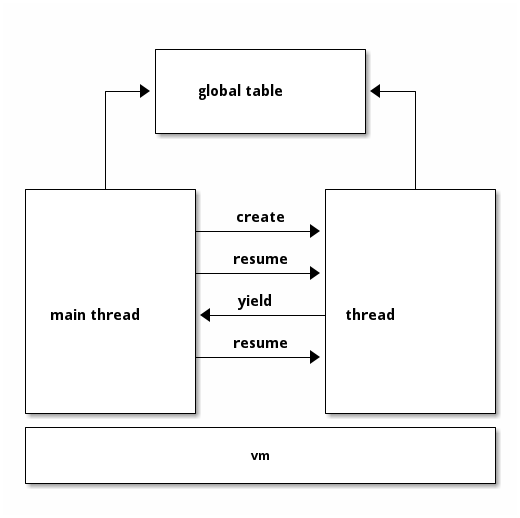
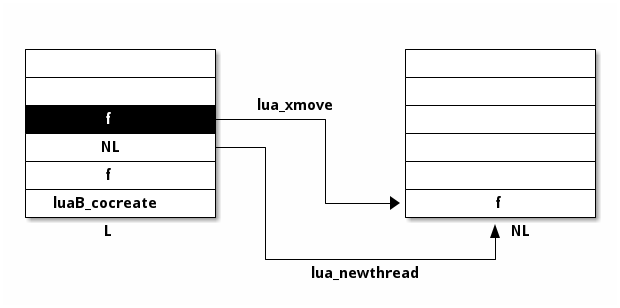
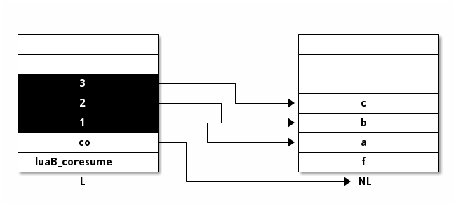
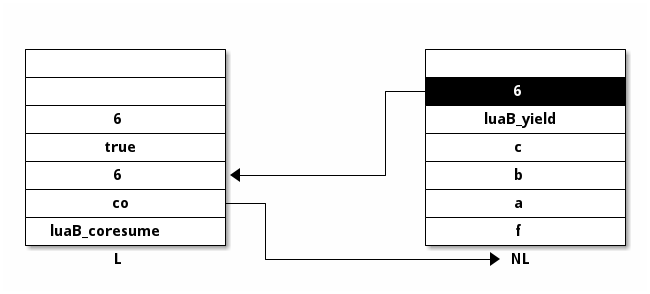
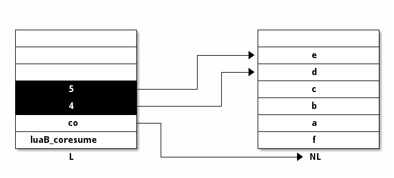
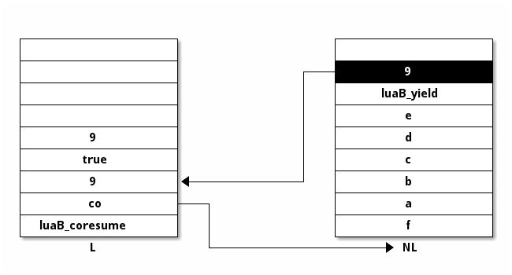

std lib
在 lex 章节提到，require next 之类不是关键字而是函数， 在 api 章节提到 api 也用于内部作用， 它们描述的都是 lua 标准库。
本章节就来讲解 lua 内部是如何处理标准库的。
1 register
标准库可以说是多种功能函数的集合，在被使用之前，必须先被注册。
18: #define LUA_COLIBNAME "coroutine" 19: LUALIB_API int (luaopen_base) (lua_State *L); 20: 21: #define LUA_TABLIBNAME "table" 22: LUALIB_API int (luaopen_table) (lua_State *L); 23: 24: #define LUA_IOLIBNAME "io" 25: LUALIB_API int (luaopen_io) (lua_State *L); 26: 27: #define LUA_OSLIBNAME "os" 28: LUALIB_API int (luaopen_os) (lua_State *L); 29: 30: #define LUA_STRLIBNAME "string" 31: LUALIB_API int (luaopen_string) (lua_State *L); 32: 33: #define LUA_MATHLIBNAME "math" 34: LUALIB_API int (luaopen_math) (lua_State *L); 35: 36: #define LUA_DBLIBNAME "debug" 37: LUALIB_API int (luaopen_debug) (lua_State *L); 38: 39: #define LUA_LOADLIBNAME "package" 40: LUALIB_API int (luaopen_package) (lua_State *L); 41: 42: 43: /* open all previous libraries */ 44: LUALIB_API void (luaL_openlibs) (lua_State *L);
35: typedef struct luaL_Reg { 36: const char *name; 37: lua_CFunction func; 38: } luaL_Reg;
17: static const luaL_Reg lualibs[] = { 18: {"", luaopen_base}, 19: {LUA_LOADLIBNAME, luaopen_package}, 20: {LUA_TABLIBNAME, luaopen_table}, 21: {LUA_IOLIBNAME, luaopen_io}, 22: {LUA_OSLIBNAME, luaopen_os}, 23: {LUA_STRLIBNAME, luaopen_string}, 24: {LUA_MATHLIBNAME, luaopen_math}, 25: {LUA_DBLIBNAME, luaopen_debug}, 26: {NULL, NULL} 27: }; 28: 29: 30: LUALIB_API void luaL_openlibs (lua_State *L) { 31: const luaL_Reg *lib = lualibs; 32: for (; lib->func; lib++) { 33: lua_pushcfunction(L, lib->func); 34: lua_pushstring(L, lib->name); 35: lua_call(L, 1, 0); 36: } 37: }
各个模块实现了各自的功能，分别注册到不同的模块名中。
| file | module |
|---|---|
| lbaselib.c | (coroutine) |
| lmathlib.c | math |
| lstrlib.c | string |
| ltablib.c | table |
| liolib.c | io |
| loslib.c | os |
| ldblib.c | debug |
| loadlib.c | package |
同时每个模块各自实现注册方法，由 luaL_openlibs 统一调用。
229: LUALIB_API void (luaL_register) (lua_State *L, const char *libname, 230: const luaL_Reg *l) { 231: luaI_openlib(L, libname, l, 0); 232: } 233: 234: 235: static int libsize (const luaL_Reg *l) { 236: int size = 0; 237: for (; l->name; l++) size++; 238: return size; 239: } 240: 241: 242: LUALIB_API void luaI_openlib (lua_State *L, const char *libname, 243: const luaL_Reg *l, int nup) { 244: if (libname) { 245: int size = libsize(l); 246: /* check whether lib already exists */ 247: luaL_findtable(L, LUA_REGISTRYINDEX, "_LOADED", 1); 248: lua_getfield(L, -1, libname); /* get _LOADED[libname] */ 249: if (!lua_istable(L, -1)) { /* not found? */ 250: lua_pop(L, 1); /* remove previous result */ 251: /* try global variable (and create one if it does not exist) */ 252: if (luaL_findtable(L, LUA_GLOBALSINDEX, libname, size) != NULL) 253: luaL_error(L, "name conflict for module " LUA_QS, libname); 254: lua_pushvalue(L, -1); 255: lua_setfield(L, -3, libname); /* _LOADED[libname] = new table */ 256: } 257: lua_remove(L, -2); /* remove _LOADED table */ 258: lua_insert(L, -(nup+1)); /* move library table to below upvalues */ 259: } 260: for (; l->name; l++) { 261: int i; 262: for (i=0; i<nup; i++) /* copy upvalues to the top */ 263: lua_pushvalue(L, -nup); 264: lua_pushcclosure(L, l->func, nup); 265: lua_setfield(L, -(nup+2), l->name); 266: } 267: lua_pop(L, nup); /* remove upvalues */ 268: }
首先进行注册的是全局方法和 coroutine 模块，
626: static void base_open (lua_State *L) { 627: /* set global _G */ 628: lua_pushvalue(L, LUA_GLOBALSINDEX); 629: lua_setglobal(L, "_G"); 630: /* open lib into global table */ 631: luaL_register(L, "_G", base_funcs); 632: lua_pushliteral(L, LUA_VERSION); 633: lua_setglobal(L, "_VERSION"); /* set global _VERSION */ 634: /* `ipairs' and `pairs' need auxiliary functions as upvalues */ 635: auxopen(L, "ipairs", luaB_ipairs, ipairsaux); 636: auxopen(L, "pairs", luaB_pairs, luaB_next); 637: /* `newproxy' needs a weaktable as upvalue */ 638: lua_createtable(L, 0, 1); /* new table `w' */ 639: lua_pushvalue(L, -1); /* `w' will be its own metatable */ 640: lua_setmetatable(L, -2); 641: lua_pushliteral(L, "kv"); 642: lua_setfield(L, -2, "__mode"); /* metatable(w).__mode = "kv" */ 643: lua_pushcclosure(L, luaB_newproxy, 1); 644: lua_setglobal(L, "newproxy"); /* set global `newproxy' */ 645: } 646: 647: 648: LUALIB_API int luaopen_base (lua_State *L) { 649: base_open(L); 650: luaL_register(L, LUA_COLIBNAME, co_funcs); 651: return 2; 652: }
line 628 629 在全局表中添加 _G，指向全局表自身。
line 631 luaL_register(L, "_G", base_funcs); 将全局函数注册到 _G 中。
在注册过程中，在 REGISTRY 表中使用 _LOADED 记录相应注册的项，避免注册时出现重复冲突。 同时将相应的注册项添加到全局表中。
最终全部模块注册后，REGISTRY 表的内容大致如下，其中 _LOADED.G 引用的正是全局表，
registry = {
_LOADED = {
_G = {
_G = {
-- ...
},
assert = ...,
dofile = ...,
--...
--...
coroutine = {
--...
--...
},
math = {
--...
--...
},
--...
},
coroutine = {
--...
--...
},
math = {
--...
--...
},
--...
}
}
可通过
$ make -s registry
来查看更具体的 REGISTRY 内容。
2 module
base 模块注册了所有基础全局函数，
447: static const luaL_Reg base_funcs[] = { 448: {"assert", luaB_assert}, 449: {"collectgarbage", luaB_collectgarbage}, 450: {"dofile", luaB_dofile}, 451: {"error", luaB_error}, 452: {"gcinfo", luaB_gcinfo}, 453: {"getfenv", luaB_getfenv}, 454: {"getmetatable", luaB_getmetatable}, 455: {"loadfile", luaB_loadfile}, 456: {"load", luaB_load}, 457: {"loadstring", luaB_loadstring}, 458: {"next", luaB_next}, 459: {"pcall", luaB_pcall}, 460: {"print", luaB_print}, 461: {"rawequal", luaB_rawequal}, 462: {"rawget", luaB_rawget}, 463: {"rawset", luaB_rawset}, 464: {"select", luaB_select}, 465: {"setfenv", luaB_setfenv}, 466: {"setmetatable", luaB_setmetatable}, 467: {"tonumber", luaB_tonumber}, 468: {"tostring", luaB_tostring}, 469: {"type", luaB_type}, 470: {"unpack", luaB_unpack}, 471: {"xpcall", luaB_xpcall}, 472: {NULL, NULL} 473: };
其中每个函数都对应一个 C 函数实现，函数使用 api 接口与 Lua 进行数据交互， 然后将函数注册到 Lua 的全局表中，在运行 Lua 代码时就可以平滑调用。 正如 api 章节所述，这即是 api 在内部实现发挥的作用。
其它模块的注册过程与之类似，读者可结合官方文档1针对相应的方法进行了解。
3 coroutine
一个出人意料的点在于，协程是用 api 来实现的，而不是内建在 vm 中。
coroutine 模块一并在 baselib 中注册，
605: static const luaL_Reg co_funcs[] = { 606: {"create", luaB_cocreate}, 607: {"resume", luaB_coresume}, 608: {"running", luaB_corunning}, 609: {"status", luaB_costatus}, 610: {"wrap", luaB_cowrap}, 611: {"yield", luaB_yield}, 612: {NULL, NULL} 613: };
其中的方法，正是在 lua 代码中使用的 coroutine.* 方法。
3.1 create
至此，我们已经了解了 8 种基础类型的 7 种，余下的 thread 类型，正是协程。
而并不意外的，协程本身正是 lua_State 。
lua_State 记录了所有 lua 代码运行时的状态，协程可理解为是 vm 另外运行的一块 lua 代码，
所以用 lua_State 来表示。
从操作系统层面而言，lua 解释器是一个单线程程序。
lua 实现的协程，虽然在内部声明类型为 thread，但是本质上，
只是多个不同的 lua_State 交替控制权在轮换执行。
也就是说，协程是异步并发的，而不是并行的。

lua 内部默认存在“主线程” main thread，就是多次出现在代码中的 lua_State *L 。
主线程可创建出新的协程并通过 resume 执行，此时主线程失去控制权； 协程通过 yield 放弃控制权，回到主线程调用时； 主线程可通过 resume 重新进入协程的中断点，继续执行。
576: static int luaB_cocreate (lua_State *L) { 577: lua_State *NL = lua_newthread(L); 578: luaL_argcheck(L, lua_isfunction(L, 1) && !lua_iscfunction(L, 1), 1, 579: "Lua function expected"); 580: lua_pushvalue(L, 1); /* move function to top */ 581: lua_xmove(L, NL, 1); /* move function from L to NL */ 582: return 1; 583: }

lua 内部通过 coroutine.create(f) 来创建协程，在主线程 L 的栈底即存在 luaB_cocreate 和 f，
通过 lua_newthead 创建协程 NL（即 lua_State ）并入栈，再将 f 复制到栈顶，
并通过 xmove 移动到 NL 的栈中，作为起始调用函数，最终返回 NL。
lua_newthead 最终调用了 luaE_newthread ，
119: lua_State *luaE_newthread (lua_State *L) { 120: lua_State *L1 = tostate(luaM_malloc(L, state_size(lua_State))); 121: luaC_link(L, obj2gco(L1), LUA_TTHREAD); 122: preinit_state(L1, G(L)); 123: stack_init(L1, L); /* init stack */ 124: setobj2n(L, gt(L1), gt(L)); /* share table of globals */ 125: L1->hookmask = L->hookmask; 126: L1->basehookcount = L->basehookcount; 127: L1->hook = L->hook; 128: resethookcount(L1); 129: lua_assert(iswhite(obj2gco(L1))); 130: return L1; 131: }
在 line 124 表明，协程是共享全局表的，即在协程中修改全局变量是相互影响的。
3.2 resume & yield
resume 函数开始执行/恢复协程的运行，第一个参数为协程本身，后续参数为传递入协程的参数，
518: static int auxresume (lua_State *L, lua_State *co, int narg) { 519: int status = costatus(L, co); 520: if (!lua_checkstack(co, narg)) 521: luaL_error(L, "too many arguments to resume"); 522: if (status != CO_SUS) { 523: lua_pushfstring(L, "cannot resume %s coroutine", statnames[status]); 524: return -1; /* error flag */ 525: } 526: lua_xmove(L, co, narg); 527: lua_setlevel(L, co); 528: status = lua_resume(co, narg); 529: if (status == 0 || status == LUA_YIELD) { 530: int nres = lua_gettop(co); 531: if (!lua_checkstack(L, nres + 1)) 532: luaL_error(L, "too many results to resume"); 533: lua_xmove(co, L, nres); /* move yielded values */ 534: return nres; 535: } 536: else { 537: lua_xmove(co, L, 1); /* move error message */ 538: return -1; /* error flag */ 539: } 540: } 541: 542: 543: static int luaB_coresume (lua_State *L) { 544: lua_State *co = lua_tothread(L, 1); 545: int r; 546: luaL_argcheck(L, co, 1, "coroutine expected"); 547: r = auxresume(L, co, lua_gettop(L) - 1); 548: if (r < 0) { 549: lua_pushboolean(L, 0); 550: lua_insert(L, -2); 551: return 2; /* return false + error message */ 552: } 553: else { 554: lua_pushboolean(L, 1); 555: lua_insert(L, -(r + 1)); 556: return r + 1; /* return true + `resume' returns */ 557: } 558: }
line 544 先找到协程， line 526 再通过 xmove 将参数传递到相应的栈中， line 528 恢复其执行，
418: LUA_API int lua_resume (lua_State *L, int nargs) { 419: int status; 420: lua_lock(L); 421: if (L->status != LUA_YIELD && (L->status != 0 || L->ci != L->base_ci)) 422: return resume_error(L, "cannot resume non-suspended coroutine"); 423: if (L->nCcalls >= LUAI_MAXCCALLS) 424: return resume_error(L, "C stack overflow"); 425: luai_userstateresume(L, nargs); 426: lua_assert(L->errfunc == 0); 427: L->baseCcalls = ++L->nCcalls; 428: status = luaD_rawrunprotected(L, resume, L->top - nargs); 429: if (status != 0) { /* error? */ 430: L->status = cast_byte(status); /* mark thread as `dead' */ 431: luaD_seterrorobj(L, status, L->top); 432: L->ci->top = L->top; 433: } 434: else { 435: lua_assert(L->nCcalls == L->baseCcalls); 436: status = L->status; 437: } 438: --L->nCcalls; 439: lua_unlock(L); 440: return status; 441: }
执行协程之后，最终返回其状态值。
line 529 判断状态为 yield 时，回收其栈上的返回值，通过 xmove 移动到 L 中。
与之相配合的，yield 函数则直接准备参数数量，重置 lua_State 的状态为 yield 即可。
593: static int luaB_yield (lua_State *L) { 594: return lua_yield(L, lua_gettop(L)); 595: }
444: LUA_API int lua_yield (lua_State *L, int nresults) { 445: luai_userstateyield(L, nresults); 446: lua_lock(L); 447: if (L->nCcalls > L->baseCcalls) 448: luaG_runerror(L, "attempt to yield across metamethod/C-call boundary"); 449: L->base = L->top - nresults; /* protect stack slots below */ 450: L->status = LUA_YIELD; 451: lua_unlock(L); 452: return -1; 453: }
比如如下示例代码，
local co = coroutine.create(function(a, b, c) local d, e = coroutine.yield(a + b + c) return d + e end) print(coroutine.resume(co, 1, 2, 3)) print(coroutine.resume(co, 4, 5)) print(coroutine.resume(co))
true 6 true 9 false cannot resume dead coroutine
第一次 resume 时，将参数传递入 NL，

协程内部执行 yield，返回状态 LUA_YIELD ，resume 通过 xmove 将结果从栈回收至 L，
最终 resume 自己压栈 bool 值 true 并 insert 所有返回值，作为调用 resume 的返回值。

第二次调用 resume 时，传递参数 4 5，在协程内部，从中断的地方继续执行， 4 5 作为 yield 调用的返回值，赋值与 d e。

最终协程内部 return 执行结束，resume 执行相同的过程，回收栈上的返回值。

3.3 status
在 lua.h 中，定义线程状态有如下几种，
42: /* thread status; 0 is OK */ 43: #define LUA_YIELD 1 44: #define LUA_ERRRUN 2 45: #define LUA_ERRSYNTAX 3 46: #define LUA_ERRMEM 4 47: #define LUA_ERRERR 5
在线程运行没有出错的情况下，对协程状态的检测会更加细致，
482: #define CO_RUN 0 /* running */ 483: #define CO_SUS 1 /* suspended */ 484: #define CO_NOR 2 /* 'normal' (it resumed another coroutine) */ 485: #define CO_DEAD 3 486: 487: static const char *const statnames[] = 488: {"running", "suspended", "normal", "dead"}; 489: 490: static int costatus (lua_State *L, lua_State *co) { 491: if (L == co) return CO_RUN; 492: switch (lua_status(co)) { 493: case LUA_YIELD: 494: return CO_SUS; 495: case 0: { 496: lua_Debug ar; 497: if (lua_getstack(co, 0, &ar) > 0) /* does it have frames? */ 498: return CO_NOR; /* it is running */ 499: else if (lua_gettop(co) == 0) 500: return CO_DEAD; 501: else 502: return CO_SUS; /* initial state */ 503: } 504: default: /* some error occured */ 505: return CO_DEAD; 506: } 507: } 508: 509: 510: static int luaB_costatus (lua_State *L) { 511: lua_State *co = lua_tothread(L, 1); 512: luaL_argcheck(L, co, 1, "coroutine expected"); 513: lua_pushstring(L, statnames[costatus(L, co)]); 514: return 1; 515: }
在调用 luaB_costatus 时要明确一点，正在调用的线程，正是拥有控制权而正在运行的线程。
CO_RUN 状态，对应于协程自身检测自身的状态，在检测的此刻必然是 running 状态。
local co = coroutine.create(function(co) print(coroutine.status(co)) end) coroutine.resume(co, co)
running
在协程刚刚新建/yield 之后，对应的状态为 CO_SUS 。
local co = coroutine.create(function() coroutine.yield() end) print(coroutine.status(co)) coroutine.resume(co) print(coroutine.status(co))
suspended suspended
如果协程本身 resume 了其它协程，此刻检测其状态，对应 CO_NOR 。
local co = coroutine.create(function(co) local a = coroutine.create(function() print(coroutine.status(co)) end) coroutine.resume(a) end) coroutine.resume(co, co)
normal
当协程执行结束/运行出错，状态都为 CO_DEAD 。
local co = coroutine.create(function() coroutine.yield() end) coroutine.resume(co) coroutine.resume(co) coroutine.resume(co) print(coroutine.status(co))
dead
需要注意的是，主线程是无法检测状态的，因为在 lua 代码层面根本没有相应的变量来对应其 lua_State 。
4 practice
标准库的代码量并不小，但是安排的架构很清晰，读者可根据自己的需要和兴趣有目的的按点阅读。
| 章节涉及文件 | 建议阅读程度 |
|---|---|
| linit.c | ★ ★ ★ ★ ★ |
| lbaselib.c | ★ ★ ★ ★ ☆ |
| lmathlib.c | ★ ★ ☆ ☆ ☆ |
| lstrlib.c | ★ ★ ☆ ☆ ☆ |
| ltablib.c | ★ ★ ☆ ☆ ☆ |
| liolib.c | ★ ★ ☆ ☆ ☆ |
| loslib.c | ★ ★ ☆ ☆ ☆ |
| ldblib.c | ★ ★ ☆ ☆ ☆ |
| loadlib.c | ★ ★ ☆ ☆ ☆ |